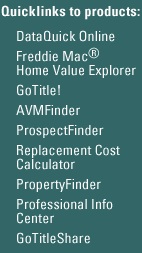

- data -
|  |
Household and housing unit data for all states from 1980 through present. . Historical nonresidential building permit data are also available from 1980 through 1995. The state data are available from 1978 through present and the MSA and county data are available from 1990 through present. Includes statistics on births, deaths, international immigration and net domestic migration. |
A Note from the Director of ARCSS, Michael Ledbetter. . Funded by the National Science Foundation's Office of Polar Programs, our focus is to archive and provide access to ARCSS-funded data. For more information about the ARCSS Data Coordination Center, please read our Introduction. ARCSS Data Coordination Center Questionnaire is available to all ARCSS funded PIs.
|
 |
Kiruna magnetogram Real time Follow the geomagnetic development in real time. The plot shows the deviation from the expected means of the three components of the geomagnetic field. A small description and more on the real time data. Other magnetometer data Pulsation measurements Total field measurements Lycksele magnetometer Old magnetometer data Access our database. Choose day, month and year and, by clicking the buttons, in what kind of format you want the data. |
 |
Only stations with at least 30 years of record are used. The gray circles indicate other stations that were not ranked in percentiles either because they have fewer than 30 years of record or because they report parameters other than streamflow. Statewide Streamflow Table Real-time data typically are recorded at 15-60 minute intervals, stored onsite, and then transmitted to USGS offices every 1 to 4 hours, depending on the data relay technique used. Recording and transmission times may be more frequent during critical events. All real-time data are provisional and subject to revision. |
A site I really like: http://www.w3.org/hypertext/DataSources/bySubject/Overview.html